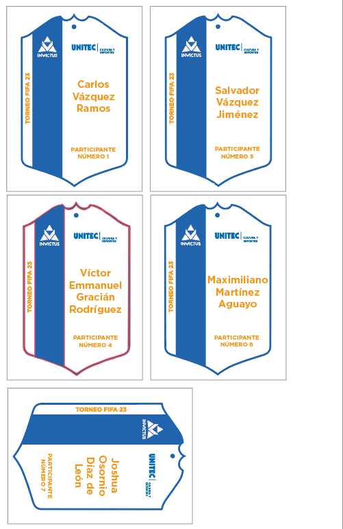
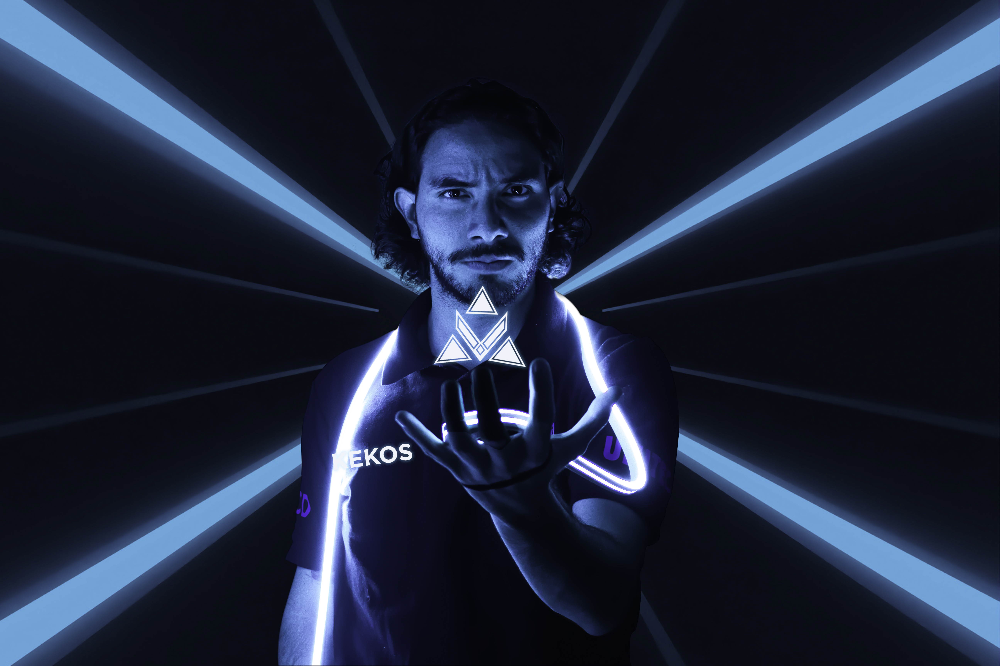
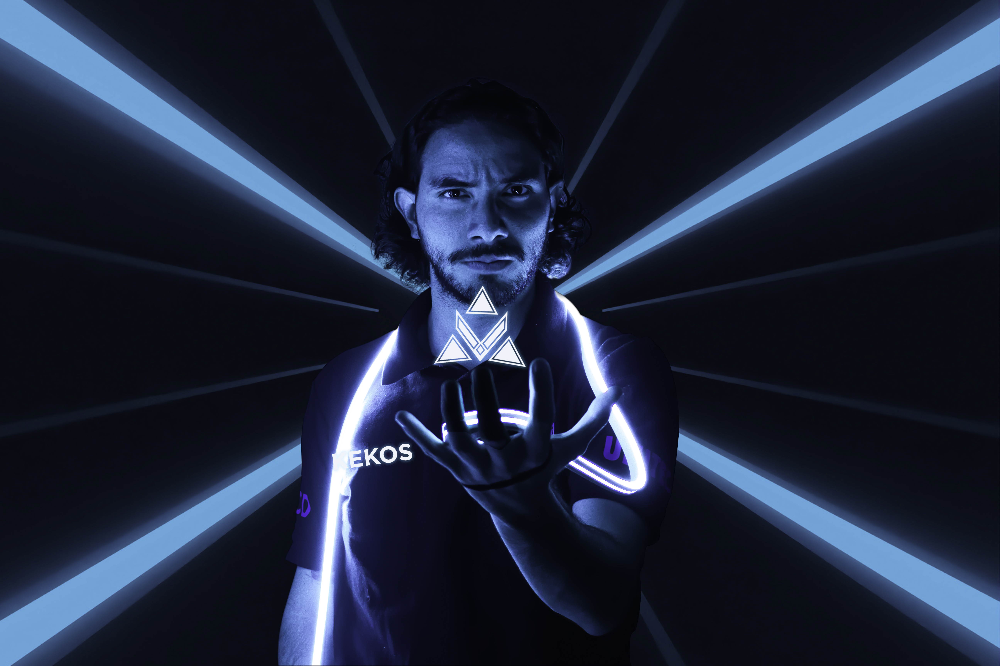
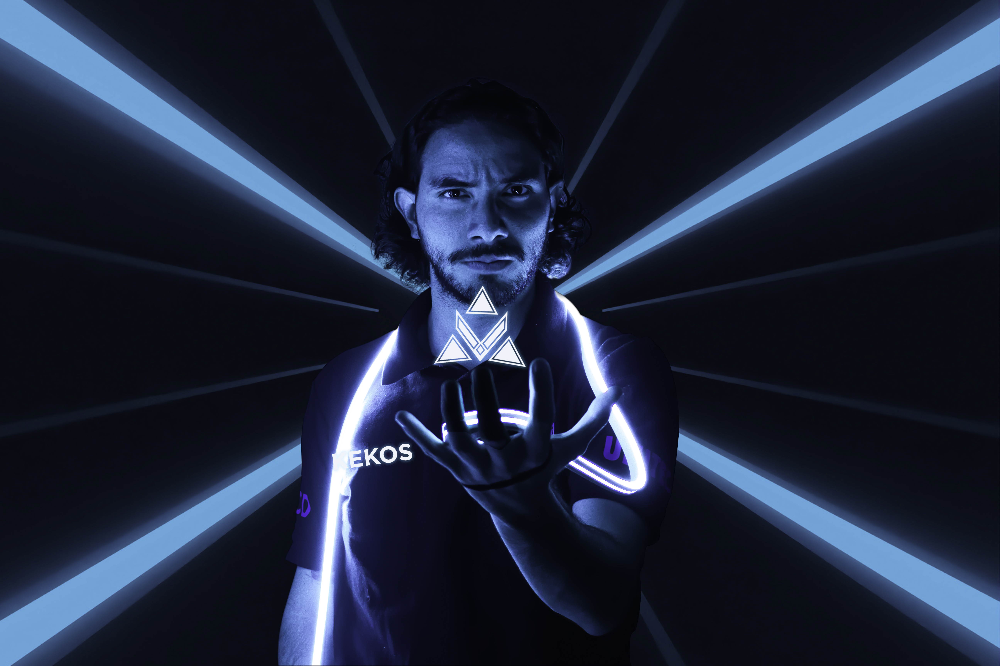

CONVOCATORIA

GAFETES
SESIÓN DE FOTOS DEL EQUIPO
 


Invictus e-sports surgió como respuesta a la necesidad de fomentar el servicio social en nuestra comunidad universitaria. Esta iniciativa fue concebida por un equipo de tres compañeros, con el objetivo primordial de establecer el primer equipo de e-sports en nuestra institución educativa. Presentamos el proyecto ante los directores de cultura y deportes del campus, quienes nos brindaron orientación y asesoramiento, basados en su vasta experiencia, para llevar a cabo la gestión y promoción del proyecto dentro de la comunidad de Unitec Campus Atizapán.
Desarrollamos una identidad distintiva para nuestro equipo, incluyendo un logo y animaciones. Posteriormente, adaptamos este logo para que fuera coherente con la imagen institucional de la universidad, lo cual resultó fundamental para fortalecer la identidad del equipo en el contexto universitario. Además, creamos una identidad específica para el evento, implementando estrategias de promoción en redes sociales, distribución de flyers impresos y formularios de registro en línea.
Para financiar el proyecto, ideamos diversas estrategias y utilizamos bases de datos para gestionar eficazmente los recursos y controlar el desarrollo del evento. A lo largo de seis meses de servicio social, logramos la participación de 83 estudiantes en los torneos organizados, demostrando así el impacto positivo de nuestra iniciativa en la comunidad universitaria.
Para abordar los desafíos que surgieron durante la ejecución del proyecto, aplicamos nuestros conocimientos en diseño para resolver problemas específicos, como la creación de reconocimientos personalizados mediante corte láser en acrílicos, la producción de lonas impresas, y la edición de video, animaciones y audio para ampliar el alcance de nuestras actividades.
Además, implementamos incentivos, como la entrega de una bicicleta y otros premios, para fomentar la participación activa de los estudiantes en el equipo de e-sports. El éxito obtenido atrajo la atención de los directores de otros campus de Unitec, quienes expresaron interés en involucrar a sus estudiantes en un torneo intercampus organizado en nuestro campus.
Nos sentimos orgullosos del reconocimiento recibido por parte de nuestros superiores, quienes valoraron positivamente la calidad de nuestra gestión y organización en el desarrollo del proyecto.

Los InterUnitec surgieron como una iniciativa de los directores de cultura y deportes, con el objetivo de consolidar a los distintos campus en una comunidad unificada, en un evento similar a las olimpiadas. Mis superiores asumieron la responsabilidad de organizar la participación de todos los campus involucrados, delegando tareas a los estudiantes de la sociedad de cultura y deportes.
En este contexto, se me asignó la tarea de crear gráficos animados para las campañas en redes sociales. A medida que el proyecto adquiría mayor seriedad, debido a la calidad del trabajo presentado, se sumó un compañero para apoyarme y cumplir con la entrega de una amplia cantidad de animaciones en un corto período de tiempo. Este periodo fue exigente, ya que estábamos contra el reloj, pero los resultados que presentamos ante los directores de los otros campus fueron extraordinarios.
Nuestro enfoque en la gestión de la identidad gráfica, la calidad de las animaciones y el discurso presentado en los videos, impresionó gratamente a los directores. Tanto así, que decidieron alquilar una pantalla gigante para presentar nuestro trabajo, lo que marcó un gran hito para nosotros. Nuestros superiores elogiaron el proyecto como algo excepcional, destacando especialmente el hecho de que el departamento de marketing no planteó objeciones, lo cual fue un momento emocionante y gratificante para todo el equipo.